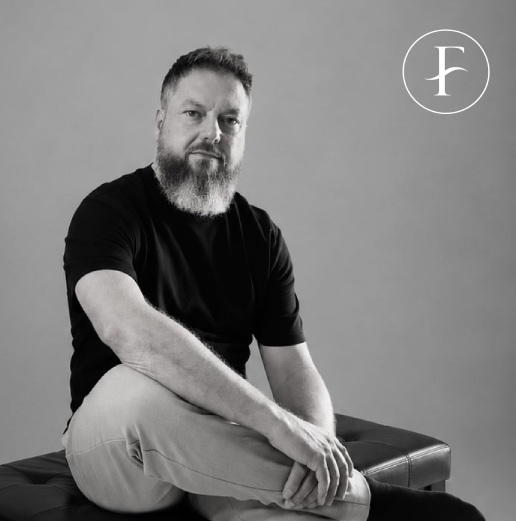
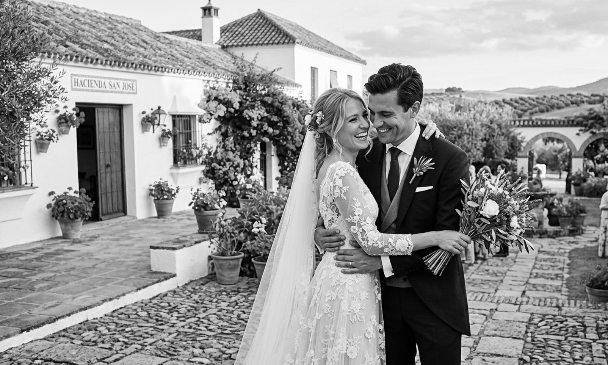

La realidad es un caos de instantes. Nuestra mirada, el orden. En FARAHISO films, no guionizamos; ensamblamos. Convertimos instantes aislados —el peso de una mirada, la vibración de un silencio— en una estructura emocional coherente. Somos el testigo invisible que organiza el caos. No filmamos lo que veis; filmamos la vibración de lo que sentís.

Llevo una década observando lo que sucede cuando nadie mira. En mis 10 años de trayectoria y tras haber filmado más de 200 historias de amor, he comprendido que una película de boda no es un registro de eventos, sino un collage de emociones reales. Mi metodología es la de un ensamblador: tomo los fragmentos —una mirada furtiva, la tensión de un silencio, la energía de un baile— y los coloco en un orden preciso para que, al ver la pieza final, no solo recuerdes el día, sino que vuelvas a sentirlo. No soy un proveedor que graba un evento; soy un autor que construye una memoria. Si buscas una película que rompa con lo convencional y que respete la honestidad de lo que sucede, estás en el lugar correcto.
Sé que el día de vuestra boda pasa en un suspiro. Entre la emoción, los nervios y los abrazos, es imposible verlo todo. Por eso, mi compromiso es que os olvidéis de las cámaras y disfrutéis plenamente del momento. Mientras vosotros vivís vuestra historia, yo me encargo de capturar, con discreción, esos instantes que quizá no llegasteis a ver y que harán que reviváis vuestro día tal y como fue. Vuestra misión es disfrutar; de conservar esos recuerdos, me ocupo yo.

© Farahiso 2026